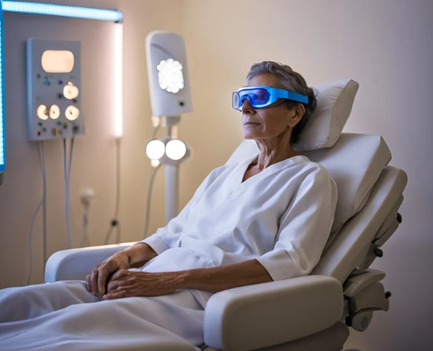
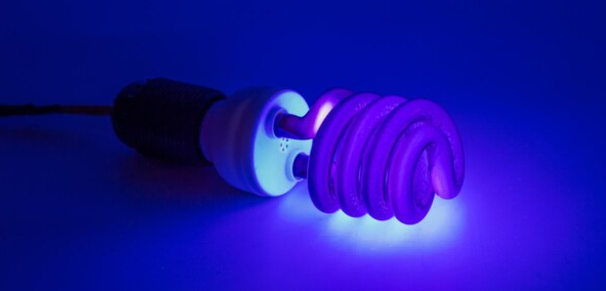

Ondas de UVA
- Definição:Radiação eletromagnética com comprimentos de onda entre 320 nm e 400 nm. Ela é dividida em três categorias principais: UVA, UVB e UVC, sendo que os raios UVA são os mais próximos da luz visível e os raios UVC têm a maior energia, mas são absorvidos pela camada de ozônio.
- Frequência:A radiação UV está abaixo do UVB na escala de frequência. Os raios UVA são menos energéticos e não ionizantes, enquanto os raios UVB podem causar queimaduras e também têm potencial ionizante em doses elevadas.
- Aplicação: Usada em bronzeamento artificial (camas de bronzeamento); Fototerapia para doenças de pele (ex: psoríase); Indústria de adesivos e tintas (cura por UV); Desinfecção de superfícies e água; Estudos científicos em fotobiologia e fotomedicina.
- Efeito:A radiação UV penetra profundamente na pele, contribuindo para a produção de vitamina D, essencial para a saúde óssea. No entanto, a exposição excessiva pode resultar em queimaduras solares, envelhecimento precoce da pele e aumento do risco de câncer de pele. É crucial usar proteção adequada, como protetores solares e roupas, para minimizar os riscos associados à exposição à radiação UV.

